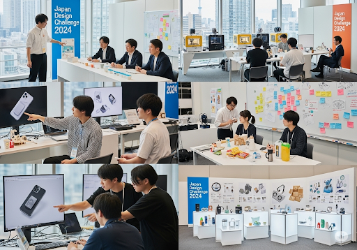
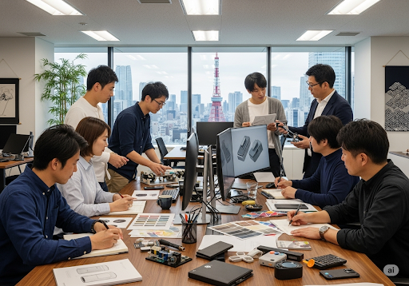
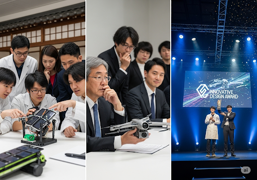

ผลงานการแข่งขันออกแบบผลิตภัณท์
"ทีม [ชื่อทีม/ชื่อผู้เข้าแข่งขัน] ได้พัฒนาและออกแบบผลิตภัณฑ์ชื่อ [ชื่อผลงาน] ซึ่งเป็นส่วนหนึ่งของการแข่งขันการออกแบบในครั้งนี้ ผลิตภัณฑ์ของเรามุ่งเน้นการแก้ไขปัญหาที่ [ระบุปัญหาที่ต้องการแก้ไข] ด้วยการนำเอา [ระบุจุดเด่น เช่น นวัตกรรม, การออกแบบที่คำนึงถึงผู้ใช้] มาประยุกต์ใช้ เว็บไซต์นี้จัดทำขึ้นเพื่อนำเสนอรายละเอียดทั้งหมดของผลงานอย่างเป็นระบบ และแสดงให้เห็นถึงความมุ่งมั่นของเราในการสร้างสรรค์สิ่งใหม่ๆ ให้กับสังคม"


